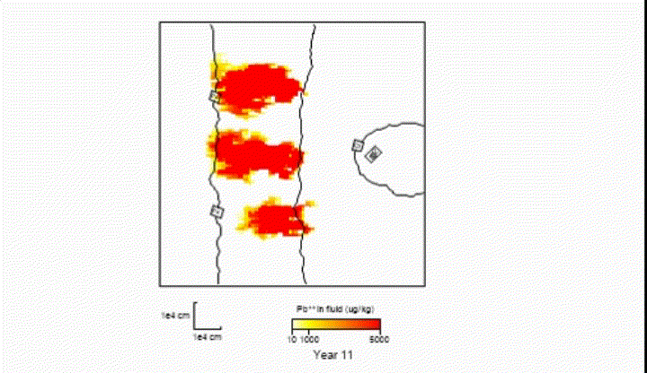
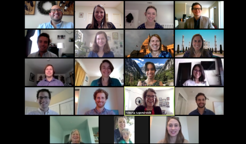
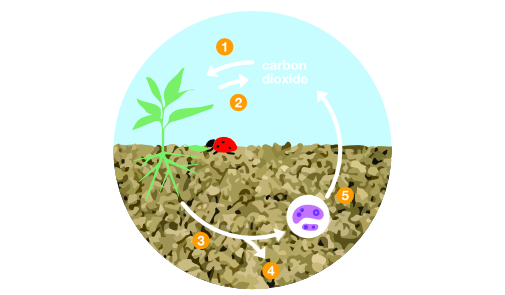
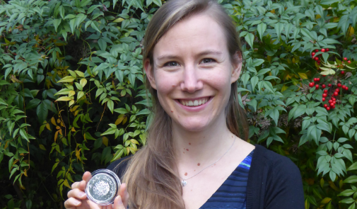
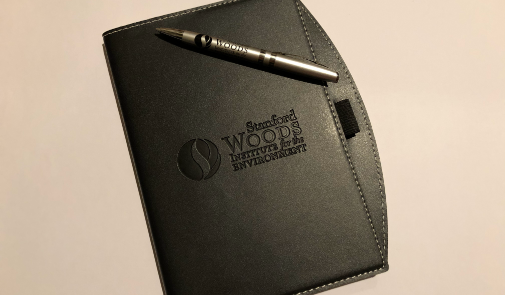
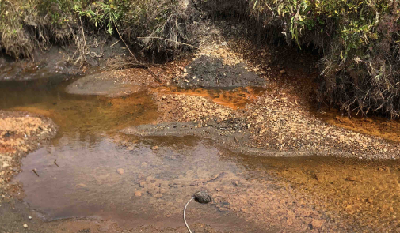
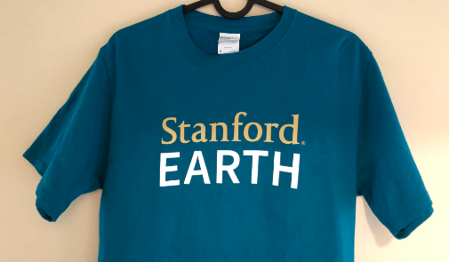
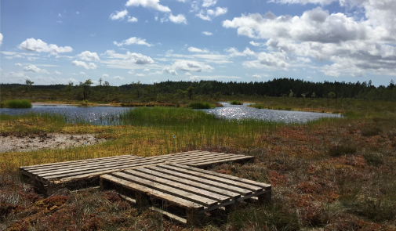

Goldschmidt 2020
June 2020
Lots of firsts this year: At the first virtual Goldschmidt, I am not only a presenter, but also a convener for Session 12b on the Coupled Redox Cycling of S, Mn, and Fe: Impacts on Nutrient and Contaminant Dynamics. It was also my first time recording a presentation!

Reactive Transport Modeling Workshop
June 2020
I learned about reactive transport modeling using The Geochemist's Workbench in a four day workshop led by Craig Bethke, Brian Farrell, Qusheng Jin, and Jia Wang.
The clip above shows the transport of lead in a contaminated aquifer.
The highlight of the workshop was talking to Qusheng about the thermodynamic control on microbial respiration rates!

Virtual bootcamp: Rising Environmental Leaders Program
June 2020
We held a virtual bootcamp in Washington, DC, with the 2020 cohort of the Rising Environmental Leaders Program. The bootcamp was organized by Stanford Woods Institute for the Environment and featured speakers working in the federal agencies, congress, non-profits and advocacy organizations.

Infographic workshop
April 2020
I created an infographic on the role of soils in climate change in a workshop offered by Science Teaching Through Art at Stanford University. Unfortunately, our outreach events at high schools in the area had to be cancelled, but we instead presented our infographics on Twitter! Click on the image to see more.

ETH medal!
January 2020
I am honored to have been awarded the prestigious ETH Silver medal for "solving important knowledge gaps in the redox reactivity of iron using an interdisciplinary approach" in my doctoral research. ETH Zürich awards this medal to the top 8% of doctoral candidates.

Rising Environmental Leaders Program
December 2019
I was accepted into the Rising Environmental Leaders program at Stanford Woods Institute for the environment. Read the bios of the 2020 cohort here.

Field trip to the Rocky Mountains
September 2019
I joined a field trip to the East River floodplain, near the town of Crested Butte in the Rocky Mountains, Colorado. The photo shows an anoxic discharge into East River with beautiful orange flocs of iron-rich organic flocs.

Starting my postdoctoral research at Stanford!
September 2019
I joined Scott Fendorf's Soil and Environmental Biogeochemistry group in the Department of Earth System Science at Stanford. I am very excited to start my project on organic matter mineralization in floodplain soils which is funded by the Swiss National Science Foundation.

Field trip to Sweden
June 2019
I went on a field trip to Sweden with some of my group members at ETH. We studied redox processes in wetlands near Filipstad- the photo on the left shows one of our field sites. More details about our field work can be found in the article Waiting for Oxygen (p. 36 ff) which was published in the ETH Globe Magazine.
{kind=link}
{kind=link}
{kind=link}
{kind=link}
{kind=link}